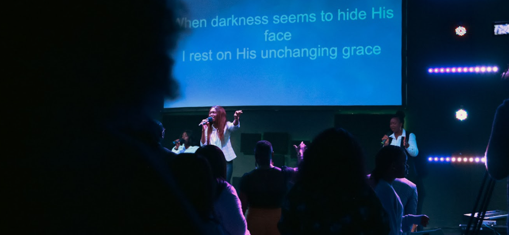

<ion-header>
  <ion-toolbar>
      <ion-buttons slot="start">
      <ion-menu-button></ion-menu-button>
      </ion-buttons>
      <ion-title>Latest at CCCG</ion-title>
  </ion-toolbar>
</ion-header>

<ion-content fullscreen>
  <ion-refresher slot="fixed" (ionRefresh)="doRefresh($event)" pullMin="100" pullMax="200">
    <ion-refresher-content refreshing-spinner="dots">
    </ion-refresher-content>
  </ion-refresher>
  <!-- <ion-toolbar>
    <ion-segment color="primary"  [(ngModel)]="type"  (ionChange)="segmentChanged($event)" scrollable>
      <ion-segment-button value="sermons" checked>
        <ion-label class="segment">Sermons</ion-label>
      </ion-segment-button>
      <ion-segment-button value="latest">
        <ion-label class="segment">Broadcasts</ion-label>
      </ion-segment-button>
    </ion-segment>
  </ion-toolbar> -->
  

  <div *ngIf="dataload">
  <!-- <div [ngSwitch]="type"> -->
    <ion-list>
      <!-- <ion-searchbar style ="color:white" autocomplete="on" debounce="888" animated [(ngModel)]="searchModel" (ionClear)="videos =[]" (ionChange)=
      "search()"></ion-searchbar> -->
      
      <!-- <ion-list-header>Sunday Services</ion-list-header>-->

      <!-- <ion-slides pager="false" [options]="slideOpts">
        <ion-slide *ngFor="let video of database.SundayVideos">
          <ion-card (click)="itemTapped(video.videoId, video.videoTitle, video.videoPub)">
            
            <ion-card-header>
              <ion-card-subtitle>{{ video.videoTitle }}</ion-card-subtitle>
            </ion-card-header>
          </ion-card>
        </ion-slide>
      </ion-slides> -->

    <ion-card *ngFor="let video of database.SundayVideos" (click)="itemTapped(video.videoId, video.videoTitle, video.videoPub)">
      
      <p>{{ video.videoTitle.split('|')[0].trim() }}</p>
    </ion-card>

    <br />

    <ion-card *ngFor="let oldVideo of database.TuesdayVideo" (click)="itemTapped(oldVideo.videoId, oldVideo.videoTitle, oldVideo.videoPub)">
      
      <p>Ask Pastor E</p>
    </ion-card>


    <ion-card *ngFor="let oldVideo of database.ThursdayVideo" (click)="itemTapped(oldVideo.videoId, oldVideo.videoTitle, oldVideo.videoPub)">
      
      <p>Bible Study</p>
    </ion-card>


    <ion-card *ngFor="let oldVideo of database.FridayPrayersVideo" (click)="itemTapped(oldVideo.videoId, oldVideo.videoTitle, oldVideo.videoPub)">
      
      <p>Night Prayers</p>
    </ion-card>

  </ion-list>
</div>
</ion-content>